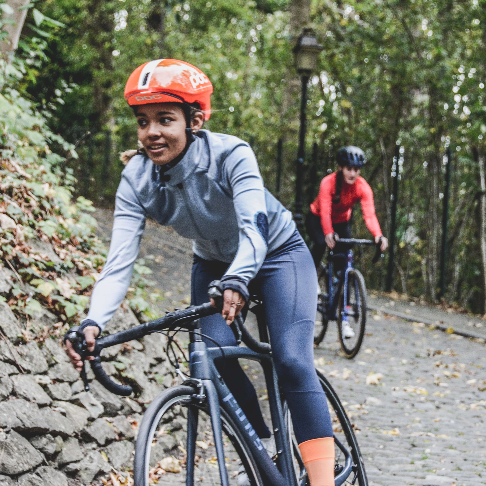
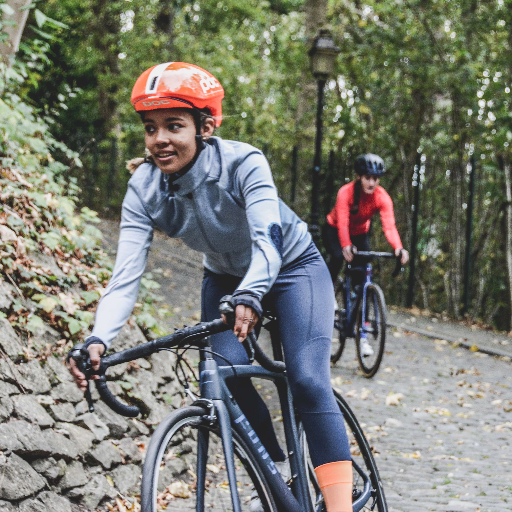
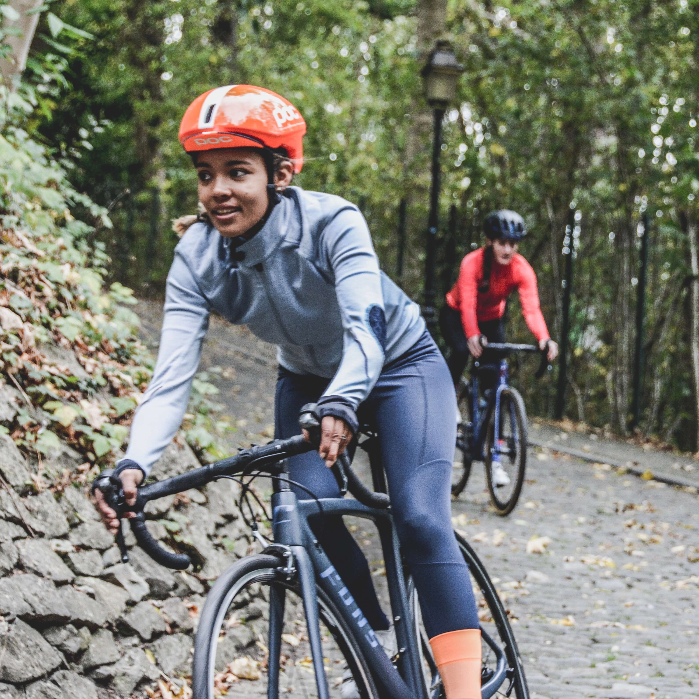

The Orange County Women’s Cycling Club was established in 2001 to create a cycling community where women of all levels could come together and have fun riding our area’s beautiful trails and roads, in a group that fosters encouragement, support, and learning... without any intimidation from the boys.
In addition to Orange County, we also host rides in Oceanside, San Diego, Santa Monica, Palos Verdes, Palm Springs, Santa Barbara, and other great spots. We enjoy exploring and the adventure of riding into new territory.
Women of all levels, shades, ages and sizes are encouraged to join.

“When the spirits are low, when the day appears dark, when work becomes monotonous, when hope hardly seems worth having, just mount a bicycle and go out for a spin down the road, without thought on anything but the ride you are taking.”
— Sir Arthur Conan Doyle